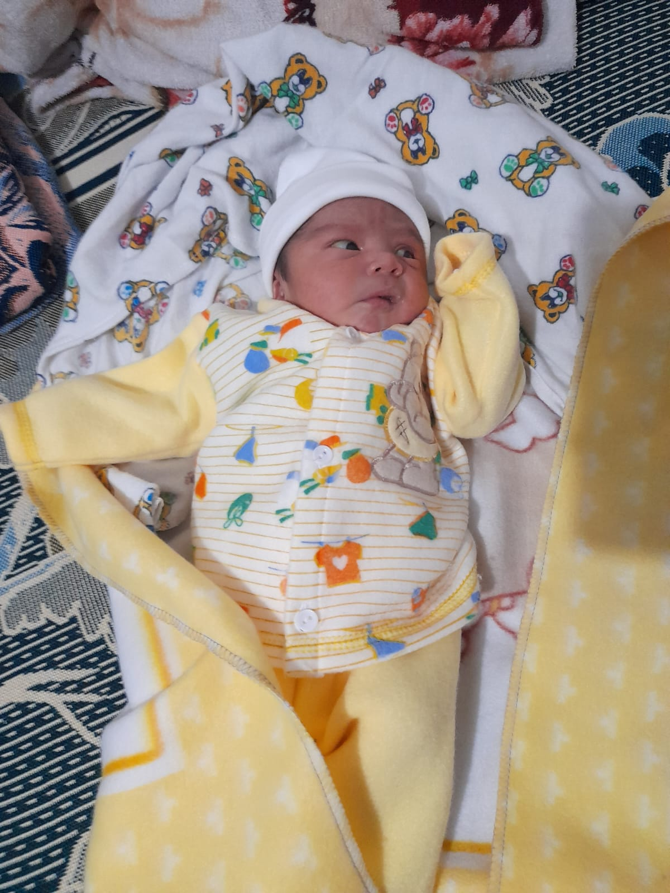
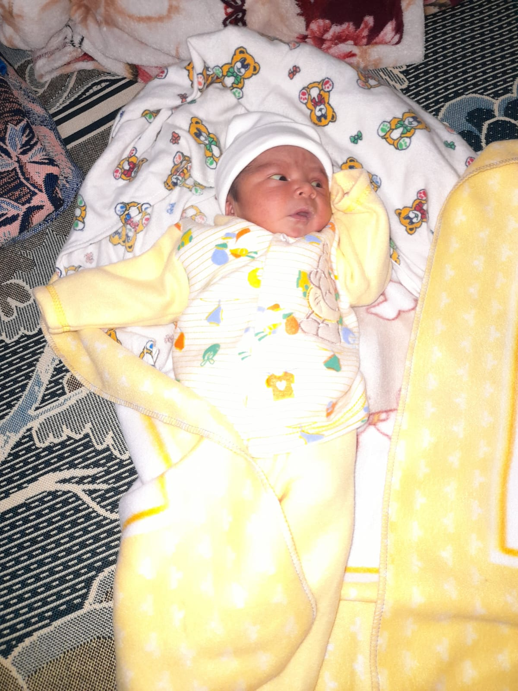
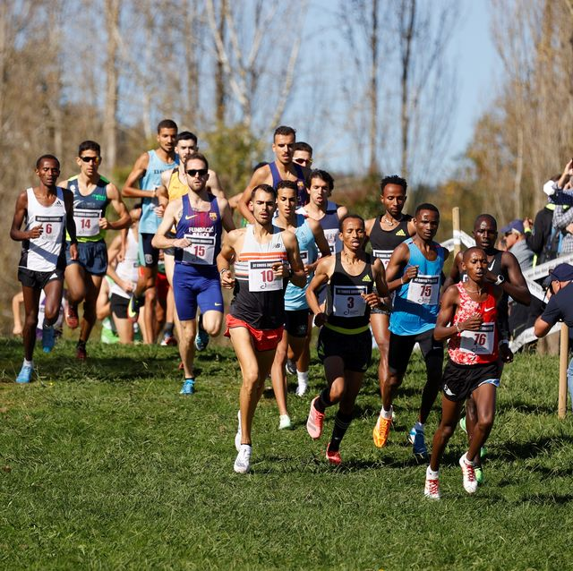

Historia
Conoce más sobre mí!
Inicio /
Niñez /
Historia /
Lugares /
Comida /
Chistes
Experiencias
Primera experiencia
Ala edad de 11 años acababa de nacer mi segunda hermana,
toda mi familia estabamos muy emocionados por ver ala bebe que acaba de dar a luz mi madre
al ser aun un niño estabamos muy emocinados con mi hermano de conocer ala nueva integrante de la familia
como era el hermano mayor mi madre me dejaba cargarla, y ahi aprendi a dar biberon a un bebe, a limpiar el pañal
a bañarla, a cambiarla, etc. Poco a poco sabia cuidar ami hermana solo y sin ayuda de mi madre.


Segunda experiencia
al entrar a estudiar el grado de primero basico me sucedio una gran experiencia que fue el dia 30 de Junio
que se celebra el dia del ejercito en Guatemala pero en el colegio que estudiaba era un colegio catolico el cual
ese dia se celebraba la carrera de los martires la cual se hacia una carrera para todos los estudiantes
el cual iniciaba en la salida del establecimiento se llegaba a un cerro el cual en una parte de la subida habia una cruz y de regreso
al ser mi primera vez corriendo en esa actividad con mis compañeros estabamos muy emocinados por ver quien de todos llegaba primero.
